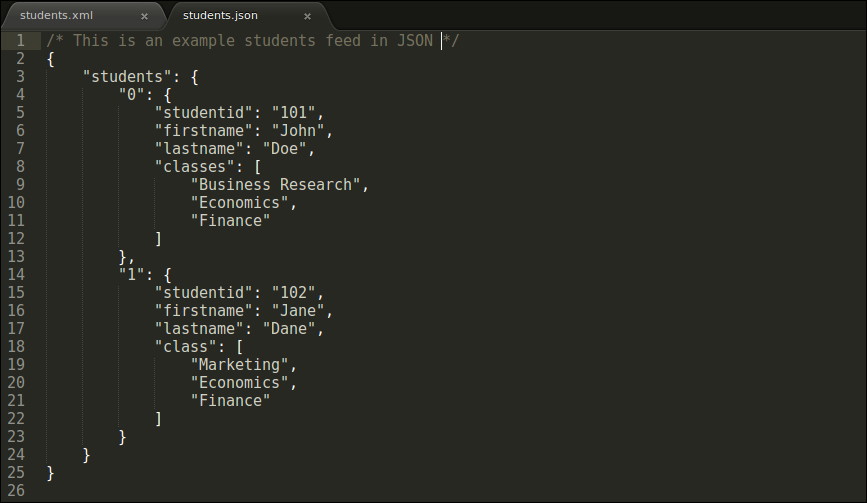

Created by Froilan Miranda
Objects are a virtual representation of real-time data; they allow us to organize our data into logical groups via properties and methods. Properties describe the state of the object, while methods describe the behavior of the object. Properties are a key-value pair that holds the information.
we could also access a property by putting the property name in square brackets similar to an array, but it is not popular.
The second way of creating an object is by using the curly braces.
JSON is text-based, lightweight, and a human-readable format for data exchange between clients and servers.JSON is derived from JavaScript and bears a close resemblance to JavaScript objects, but it is not dependent on JavaScript. JSON is language-independent, and support for the JSON data format is available in all the popular languages, some of which are C#, PHP, Java, C++, Python, and Ruby.
JSON can be used in web applications for data transfer. Prior to JSON, XML was considered to be the chosen data interchange format.
The following is an example in XML:
Let us take a look at the example in JSON:
A real-time feed will begin with a few thousands and go upwards. Another point to note is the amount of data that has to be generated by the server and then transmitted over the Internet is already big, and XML, as it is verbose, makes it bigger.
Given that we are in the age of mobile devices where smart phones and tablets are getting more and more popular by the day, transmitting such large volumes of data on a slower network causes slow page loads, hang ups, and poor user experience, thus driving the users away from the site.
In the first step, we are creating a JavaScript variable and initializing the variable with a JavaScript object. Similar to how we retrieve data from a JavaScript object, we use the key-value pair to retrieve the value.
JSON is a collection of key and value pairs, where every key is a reference to the memory location where the value is stored on the computer.
Now let us take a step back and analyze why we need JSON, if all we are doing is assigning JavaScript objects that are readily available. The answer is, JSON is a different format altogether, unlike JavaScript, which is a language.
JSON keys and values have to be enclosed in double quotes, if either are enclosed in single quotes, we will receive an error.
Since a JSON key is a string, we can use any valid string for a key. We can use spaces, special characters, and hyphens in our keys, which is not valid in a normal JavaScript object.
When we use special characters, hyphens, or spaces in our keys, we have to be careful while accessing them.
The reason the preceding JavaScript statement doesn't work is that JavaScript doesn't accept keys with special characters, hyphens, or strings.
So we have to retrieve the data using a method where we will handle the JSON object as an associative array with a string key.
Another difference between the two is that a JavaScript object can carry functions within, while a JSON object cannot carry any functions.
Finally, the biggest difference is that a JavaScript object was never intended to be a data interchange format, while the sole purpose of JSON was to use it as a data interchange format.
JSON supports six datatypes: strings, numbers, Booleans, arrays, objects, and null.
There are many other programming languages that provide implementations for JSON. Languages such as PHP, Python, C#, C++, and Java provide a very good support for the JSON data interchange format.
In real-world applications, JSON can be retrieved either as a response from an asynchronous request or from a JSON feed. A data feed is a crude way of supplying data so that others can reuse it to display the data on their websites or to ingest the data and run their algorithms on it. Such data feeds are big in size and cannot directly be embedded into the script tag.
To traverse through any JSON feed, it is important to make a note of how the data is arranged.
If our object is small and has one or two child objects, we would prefer using their numeric indexes to access them; in this case, as we have a huge number of child objects, it is not realistic to target objects based on static indexes.
To tackle an array of objects, we have to handle them in an iterative method. We will have to come up with an iterative solution in which we target one object at a time; once the object is accessed, we would not target that object another time.
This allows us to maintain data integrity as we can avoid accessing the same object multiple times, thereby avoiding any redundancies. The looping statements in JavaScript are the while loop and the for loop.
JSON retrieved from a JSON feed is always going to be read-only; as such data feeds do not provide functionality to modify their data from unverified sources.There are many cases where we would want to ingest the data from an external data feed, and then modify that content as per our requirements.
An example is a company that is using a data feed that is being supplied by a data vendor, but the data that is being provided is a lot more than the company requires. In such cases, rather than using the whole feed, the company would only extract a part of it, perform certain operations to modify it as per their requirements, and reuse the new JSON object.
AJAX is an asynchronous two-way communication between the browser that is considered to be the client, and a live web server via HTTP (or HTTPS).
This is the original way in which an AJAX call is made to a live web server
In the preceding snippet we are creating an instance of the XMLHttpRequest object. The XMLHttpRequest object lets us make asynchronous calls to the server, thus allowing us to treat sections in the page as separate components. It comes with powerful properties such as readystate, response, responseText, and methods such as open, onuploadprogress, onreadystatechange, and send
XMLHttpRequest, by default, opens up an asynchronous request; here we will specify the method in which the live feed has to be contacted. As we will not be passing any data, we choose the HTTP GET method to send the data over to our live web server. While working on an asynchronous request, we should never have a blocking script; we can deal with this by setting up callbacks. A callback is a set of scripts that will be waiting for a response and will be fired on receiving that response. This behavior facilitates non-blocking code.
The placeholder method, onreadystatechange, looks for a property in the request object called readyState; whenever the value of readyState changes, the onreadystatechange event is fired. The readyState property keeps track of the progress of the XMLHttpRequest that is made.
In the preceding screenshot, we can see the callback has a conditional statement that is verifying that the value of readyState is 4, meaning that the server has received the XMLHttpRequest that was made by the client and a response is ready.
Let's take a quick look at the available values for readyState:
we are also looking for another property called the status; this is the HTTP status code that is coming back from the server. Status code 200 represents a successful transaction, while status code 400 is a bad request and 404 means Page Not Found. Other common status codes are 401, which means the user has requested a page that is available only for authorized users, and 500, which is an Internal Server Error.